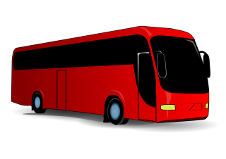

Why take the bus?
"Being active helps with physical health, and taking transit instead of driving reduces stress. Buses are also safer than individual vehicles. By leaving the car at home, a person can save up to 20 pounds of carbon dioxide emissions every day. Buses keep the air cleaner." - UCLA